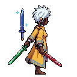
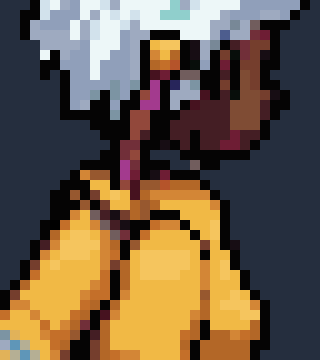

Riley · Neck & shoulders
Still study · Preview only · Game unchanged
Neck: the jaw used to sit straight on a yellow bump. Now a shaded neck runs from under the jaw down into the collar (about 4 px taller).
Far shoulder: that yellow bump under the chin was the far shoulder — sitting in the neck’s spot. It’s removed; the far arm now starts from behind the chest edge one row lower and is a tone darker so it reads as behind the body.
Face, hair, near arm, swords and size unchanged. Preview only.
Original

Proposed cleanup

Neck & shoulder close-up
Original

Proposed cleanup

Compare the neck beneath the jaw and the slope into the upper arms. This is a proposal, not an applied character update.